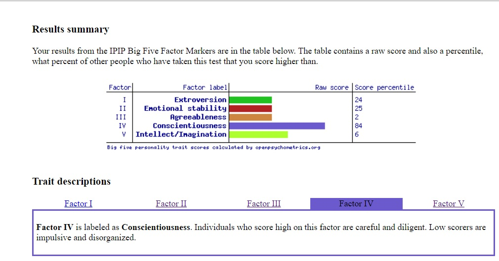
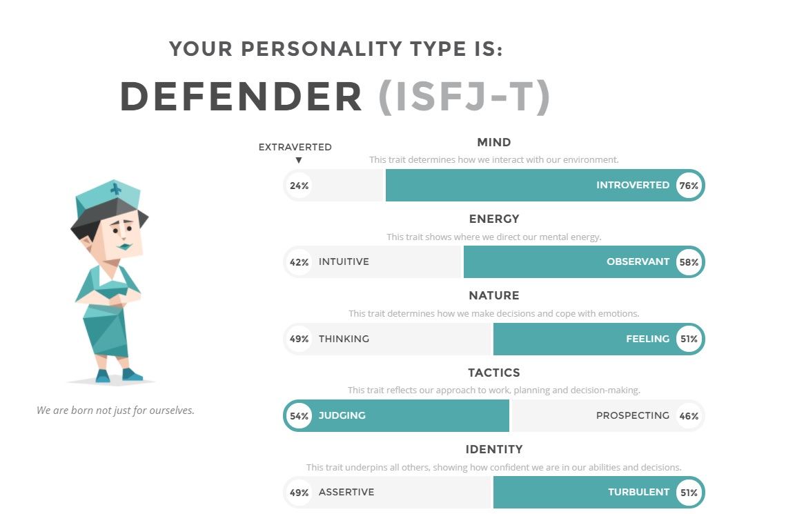

My Interest in I.T
What is your interest in IT? When did your interest in IT start? Was there a particular event or person that sparked your interest? Outline your IT experience (if any).
My interest in computers, technology and IT began when i was pretty young. I would watch my older brother play computer games which sparked my interest. As I got older and began using a computer I found it cool how you could play an infinite amount of games, google basically anything, watch other peoples videos via youtube and purchase and sell items online. I studied IT in year 11, but none of the stuff we learned has any relevance here. I dont have any experience in coding or programming.
Why did you choose to come to RMIT?
A reason I chose to study at RMIT is because when I came to the open day and explored the campus It felt comfortable and familiar. The facilities looked in good condition, the people were friendly and coincidentally many of my highschool friends went to RMIT too. Another reason why I chose to study at RMIT was because my school was eligible to receive SNAP, which is probably why a lot of my friends came to RMIT, not to mention it's simple to straightforward to come to RMIT from home.
What do you expect to learn during your studies?
During my studies at RMIT i'm hoping to learn various skills and knowledge to help me excel in the IT industry. Skills that will set me apart from the competition and allow me to adapt and overcome numerous problems such as learning a new language.
Ideal Job
The position is game developer. The position would appeal to me because I'm passionate and love playing games and I think it would be fun and interesting to be apart of the process in creating a game and watching people play the game you make. For this position you need to demonstrate that you have a creative mind with critical thinking, be able to communicate with others, have advanced PC skills and understanding on software development. Currently I dont possess many of those required skills. To obtain these skills I aim to continue with the course, try to be more talkative among my peers and open my mind more, and to further enhance the skills I already have I hope to learn more about computers and what makes them run. Software and hardware side.
Personal Profile
Online learning style test
From the results of the learning style test it seems im well rounded in how I learn, but I would say i'm indeed more of a visual learner. I learn better when I watch someone do something in front of me rather than explaining how to do it in words or reading pages of text. I would say I also learn better when i'm physically doing a task instead of doing nothing and listening. I think I would be a good asset in team based activities as I try to contribute to the discussion when I can. When forming a team I'd partners who also contribute to the group work.
Big 5 personality test
From the stats of the Big 5 personality test, I can see that I scored highest for conscientiousness. I think it's accurate since I always think carefully before I talk or act. I'm always cautious when i'm in an unfamiliar situation and tend to theorize possible outcomes that may occur to different inputs I make. I listen to facts not feelings and always strive to be punctual. Time is money.
Myers Briggs test
Looking at the results from the test I think they are somewhat accurate apart from Nature, which I believe should more further to the thinking side instead of feeling.
My project Idea
Overview
Basically the idea is having the ability to connect your smartphone to your house and operate your house via a smartphone app. This will allow the user will able to turn on lights, fans, the TV, stove, oven, anything electrical with a touch or speech.
Motivation
The motivation behind the idea is that people are always inventing and implementing new innovative ideas to make our lives easier. Being able to remotely control home tech with your smartphone instead of having to get up from your comfy couch position to turn on/off the tv/lights would definitely make life more enjoyable, even if it's a small thing.
Description
There definitely would be potential drawbacks and safety issues that could arise. Children playing pranks, constantly turning on and off devices to try and look "supernatural". Safety concerns of turning on the oven or stove and who can turn them on, whether theres a possible situation where a young child is able to use the app to turn them on, which is why there would definitely be some kind of implementation to prevent it. The app would be downloaded from the app store. Then the user would connect their smartphone to their house via bluetooth, which will then give them access to all the features in the house. The UI on the smartphone should be clear and concise so the user knows exactly what it is theyre operating. The app should only be available to users aged 16 and over, but to further prevent any possible dangers, the app should have a one step verification before being able to be used. This could be a password, fingerprint scanner or voice recognition. This would prevent children from being able to turn on the stove or oven or microwave, if they got their hands on their parents' phone. The app would allow users to turn on/off most if not all electrial devices connected to their house including, but not limited to the computer, A/C, fans, washing machine, TV, laptops, heaters, kettle, lights and many more.
Skills required
The skills required would be advanced knowledge and understanding of bluetooth, software development, programming, coding.